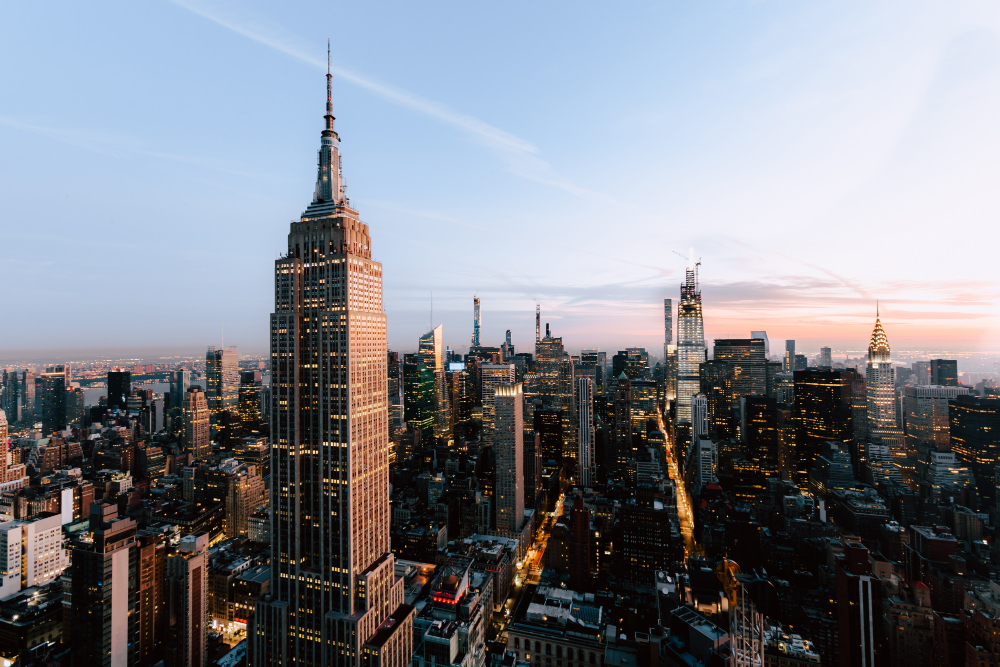
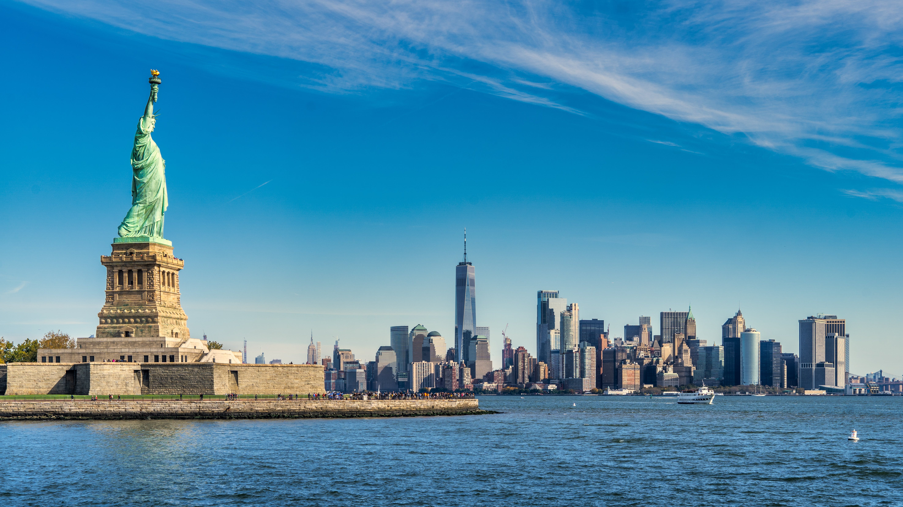
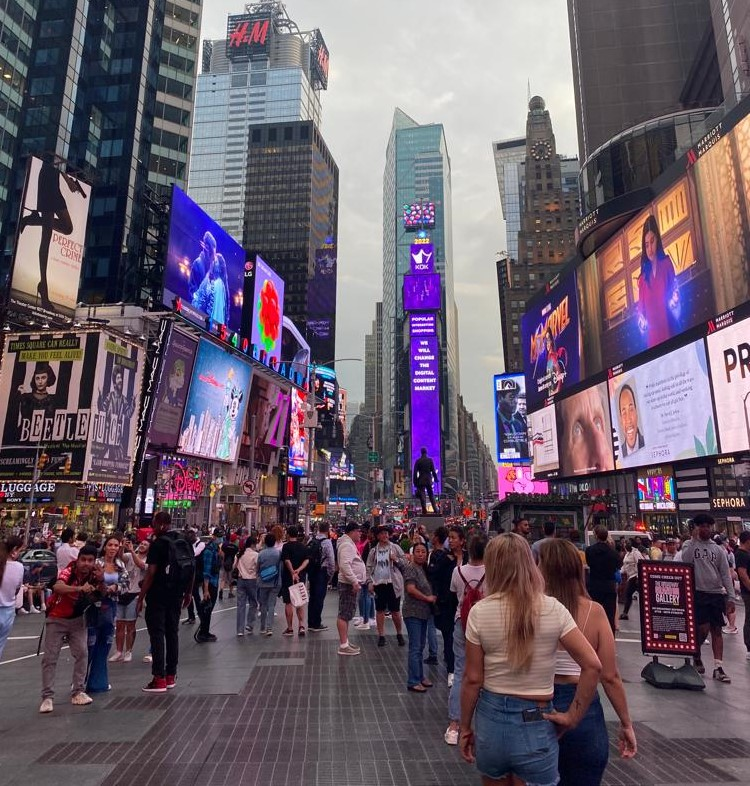
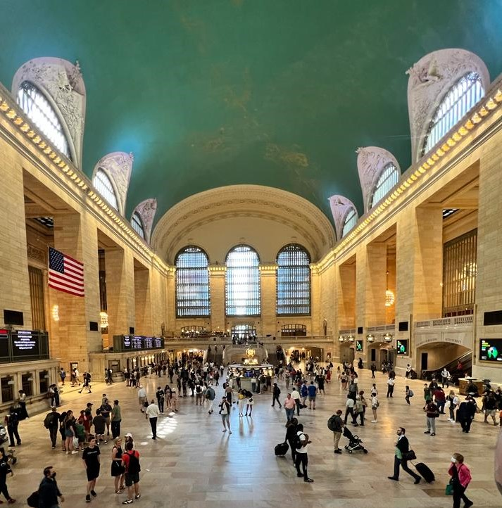
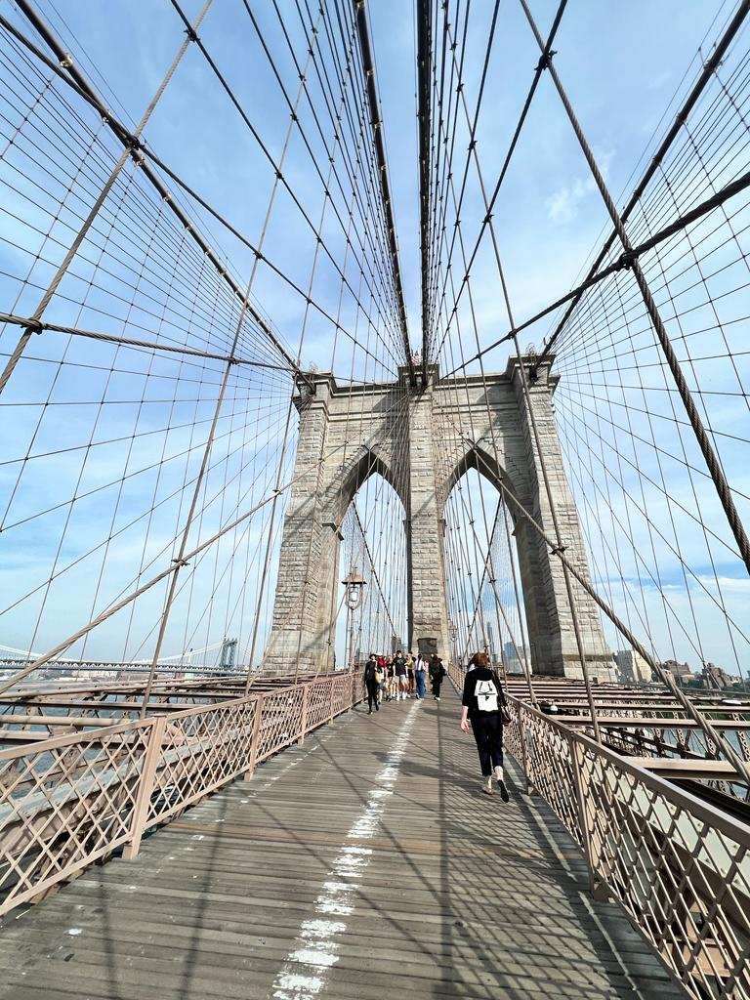
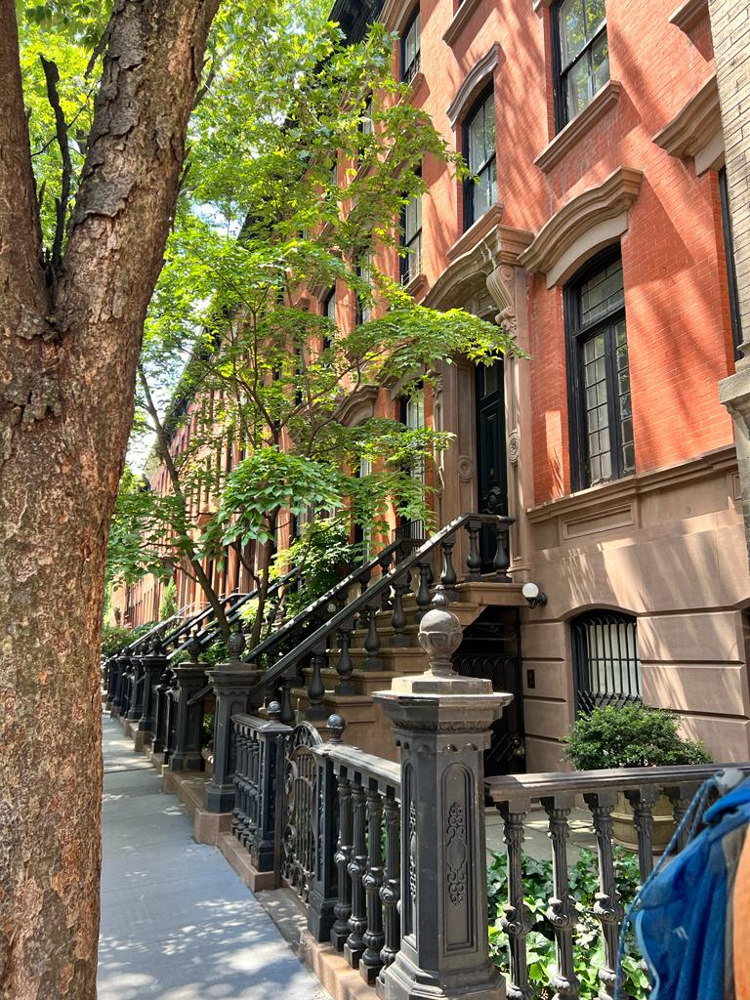
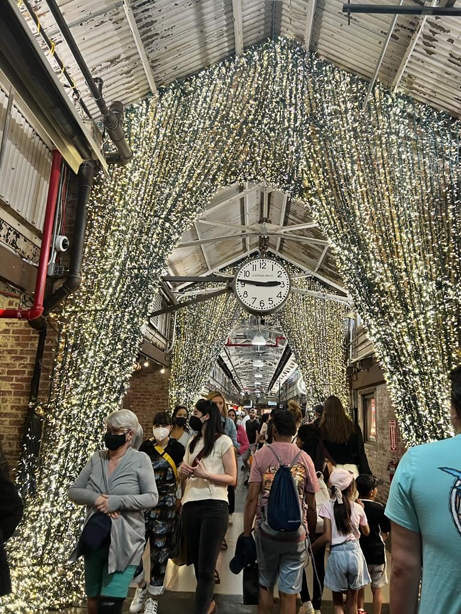
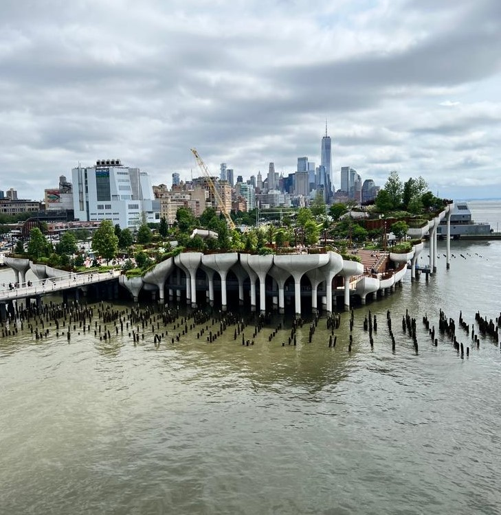
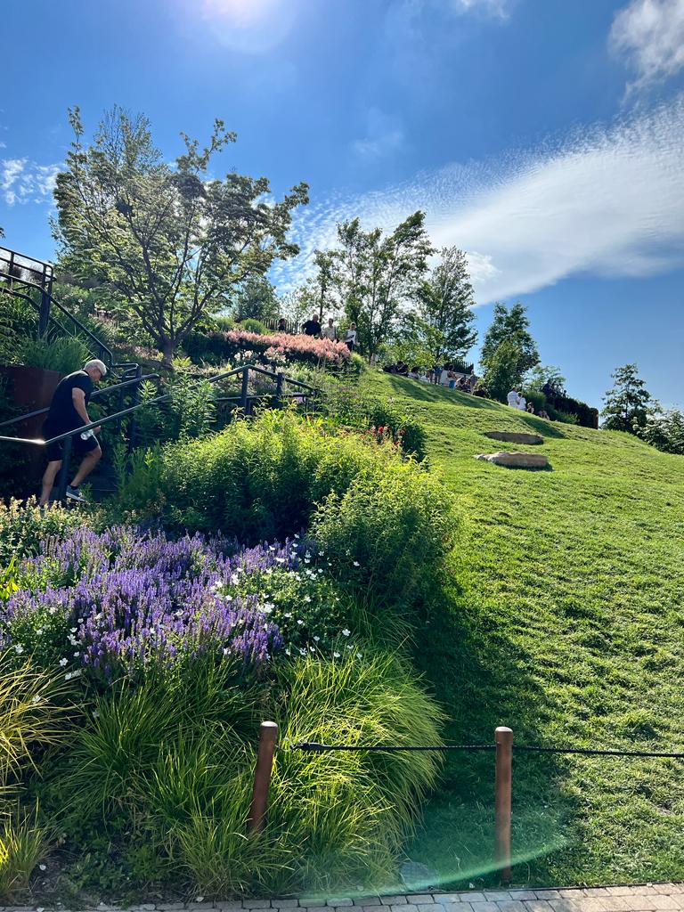
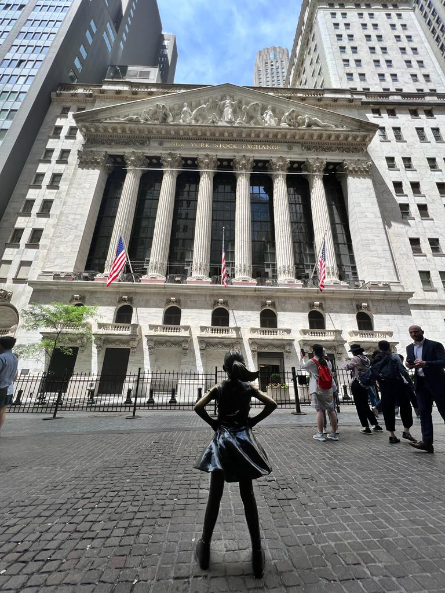

Uno de los planes que tenés que hacer sí o sí es pasear por el Central Park, en bici o a pie, es un plan único y diferente según la estación del año en que realices tu viaje. Acordate de incluir el lago y la fuente de Bethesda.
"Creo que sí, que has perdido la cabeza, estás completamente loco. Pero te diré un secreto: las mejores personas lo están."Lewiss Carroll
Imágenes del central park, incluyendo el mosaico negro y blanco diseñado por un equipo de artistas italianos en honor a la famosa canción de John Lennon "Imagine"
Escuchá la canciónSubí hasta el rooftop de alguno de los edificios más icónicos de la ciudad para descubrir una vista panóramica de toda la ciudad!
Algunos de estos son el Empire State Building, el Edge, el Top of the Rock, el SUMMIT y el One World.
Descubrí más en nuestra sección Miradores
Subir al ferry de Staten Island es una experiencia hermosa, mientras te alejas de Manhattan puede verse la línea formada por los icónicos rascacielos de Nueva York. Esta vista es aún más impresionante durante el atardecer al ver los colores del cielo y las luces que se van encendiendo.
Este ferry no para en Liberty Island, pero sí alcanza para ver la Estatua de la Libertad de lejos y disfrutar del paisaje.
Los museos de Nueva York son auténticas obras de arte, tanto sus edificios como todo lo que puedes ver dentro!
Algunos de ellos son:
El High Line es un parque elevado sobre las calles de Manhattan donde se encuentran las antiguas vías de tren. Este lugar es increíble por su desarrollo paisajístico, el paseo incluye arte y
Esta esquina es una de las más famosas de la ciudad con sus tiendas y pantallas de anuncios que iluminana 24 horas. Su energía es frenética y vibrante.
Los musicales de Broadway se encuentran entre los mejores del mundo, todas las noches se presentan decenas de obras.
El salón principal de la terminal Grand Central es impactante. Muchísima gente pasa por esta terminal todos los días, pero para quienes la visitan por primera vez es una escena soñada. Sus constelaciones y galerías abovedadas son una belleza.
Es sin dudas el puente más famoso de Nueva York, y el más fotogénico. Si puedes es mejor ir temprano para evitar multitudes. Del otro lado, puedes disfrutar de un recorrido por el barrio de Dumbo y las vistas del skyline. También aprovechar para ir a comer algo al mercado Time Out.
Pasear por el Bryant Park nos lleva a bajar la velocidad, descansar y disfrutar del aire libre. Es un espacio donde los locales van para hacer un picnic, disfrutar de ciclos de cine, etcétera. Cuando es navidad también podrás ver un mercado y una pista de patinaje sobre hielo.
Al lado se encuentra la New York Public Library de la 5ª Avenida, que también se puede conocer.
En esta zona se encontraban las torres gemelas que sufrieron el atentado terrorista aquel triste 11 de Septiembre. Por eso mismo, aquí hoy en día construyeron el monumento a los desaparecidos. Un lugar para quedarse sin aliento.
Por el área también puede visiarte el nuevo rascacielos y observatorio One World o la estación y centro comercial Oculus.
Aunque Manhattan sea el principal atractivo turístico en la ciudad, también se pueden descubrir otros de los distritos que pertenecen a ella como Brooklyn, Queens, Staten Island y el Bronx. Algunas recomendaciones: Williamsburg, Park Slope, Cobble Hill, Carroll Gardens, Greenpoint.
Este icónico edificio de base triangular se encuentra en la esquina de Broadway y la 5ª Avenida. También se puede incluir en este punto un paseo por el vecino Madison Square Park.
El barrio de Soho es una de los lugares donde abundan tiendas para comprar productos únicos. También puedes ir a Herald Square donde se ubican las tiendas más clásicas.
Si el presupuesto es más acotado puedes ir a los outlets, algunos son Woodbury Common, Jersey Gardens o Empire Outlets.
La 5ª Avenida es una de las calles más famosas del mundo, el imperdible es el tramo que va desde el Central Park al Rockefeller Center, donde puedes ver el Hotel Plaza y tiendas de lujo como Tiffany´s. Muchos de ustedes recordaran la pelicula "Desayuno en Tiffany´s". También se puede ver la Catedral de St. Patrick y otras tiendas con un diseño increíble, como la famosa Apple.
En este mercado encontrarás un montón de puestos de comida y tiendas muy originales. No te lo pierdas!
Si te gustan los clubs de música, restaurantes y lugares antiquísimos este es el barrio que debes visitar. Además allí también se encuentra la plaza Washington Square donde conviven artistas callejeros de todo tipo.
En el barrio vecino de West Village podrás fotografiar casas con un porche de película, una escena que seguramente ya viste en muchísimas películas. Aprovecha para buscar el edificio de la serie "Friends" y la casa de Carrie, la protagonista de la serie "Sex and the City".
Este parque con hermosos paisajes fué inaugurado en 2021, es una isla artificial que fué construída sobre el Río Hudson. Desde aquí se puede ver el skyline de Nueva York. También puedes subir a la terraza del edificio Pier 57 para disfrutar otras vistas.
 El distrito de Wall Street es sumamente conocido y es donde se toman algunas decisiones que afectan a las empresas a nivel global, aquí podemos encontrar la estatua del Toro de Wall Street. Justo enfrente de la Bolsa de Wall St también puede verse la escultura de la niña sin miedo o Fearless Girl, una niña valiente haciendole frente y mirando muy decidida hacia las grandes corporaciones.
